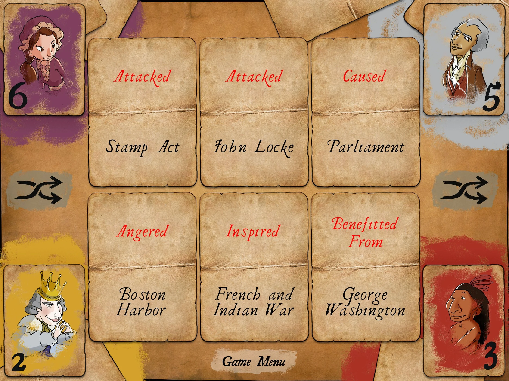
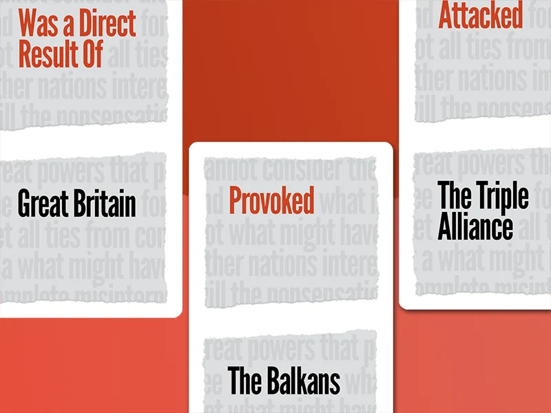

Fact Fuse
"Fact Fuse is a series of answer-judging card games that teach history and historical thinking skills to middle school students. It is played by large or small groups of students who compete to quickly identify and justify historical arguments based on the cards available." - Sean Bouchard
Fact Fuse and Chrono Scouts (paired game) were created by USC Game Innovation Lab.
You can play with the free print-and-play version or purchase one here.
My contribution
In 2016 I had the opportunity to be a game design intern at USC Game Innovation Lab. One of my activities during that Summer was to research for content and playtest the game Fact Fuse, a card game to teach history to middle schoolers.
The game was already with its core design defined, so they mostly needed extra input in their content and game balance.
You can find more information about the game in Sean Bouchard's website, one of the Lead Game Designers in the project, or in the USC Game Innovation Lab's website.
Rules
Fact Fuse is a competitive game for 2-5 players with the goal of spotting and defending facts. Players lay out a number of shared cards, each with one historical noun and one historical verb. The first player to spot a three-card sentence about the war yells “Fact!”. If that player can convince the others that their sentence is true, they keep the three cards as points. The player with the most points when the cards run out wins!


Video
You can play with the free print-and-play version or purchase one here.